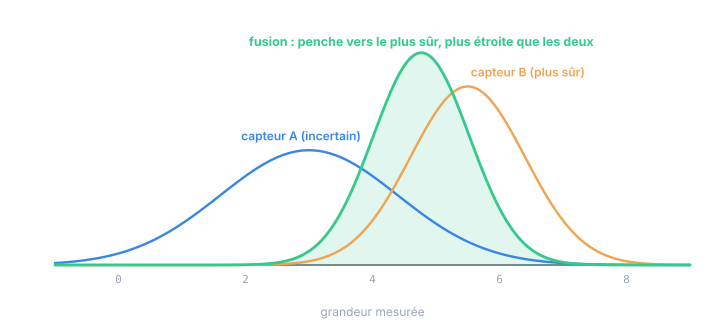

Chapitre 09
L'estimation optimale : conditionnelle, MMSE, fusion
Objectifs du chapitre
- Poser le critère MMSE (minimiser l'erreur quadratique moyenne) et son vainqueur : E[X | Z].
- Dérouler le cas gaussien : la fusion de deux sources, pondérée par les variances.
- Voir la forme « information » : les précisions s'additionnent.
- Relier chaque concept du cours aux objets du filtre de Kalman — la table de passage.
1. Le problème, et le critère
Situation générique : une grandeur inconnue X (l'état), une observation Z liée à X (la mesure). On veut une recette x̂(z) — un estimateur, chapitre 8 — la « meilleure » possible. Meilleure au sens de quoi ? Le critère standard est le MMSE (minimum mean square error) : minimiser l'erreur quadratique moyenne E[(X − x̂(Z))²] — la moyenne, sur tous les mondes possibles, du carré de l'erreur commise. Un critère de niveau ensemble, cohérent avec tout ce qui précède : on ne peut pas garantir une erreur petite dans ce monde-ci (le hasard peut être méchant), seulement en moyenne sur les mondes.
2. Le vainqueur : l'espérance conditionnelle
Le théorème central de l'estimation tient en une ligne :
Autrement dit : observez z, découpez la tranche conditionnelle (chapitre 3, figure 3.1), prenez son centre de gravité. Aucun estimateur, aussi sophistiqué soit-il, ne fait mieux en moyenne quadratique. L'intuition : une fois la tranche découpée, tout ce qu'on sait de X est dans cette loi conditionnelle ; et pour minimiser un carré moyen autour d'un point, le point optimal est la moyenne (c'est la propriété de centre de gravité du chapitre 2).
Et l'erreur résiduelle ? C'est la variance de la tranche — la variance conditionnelle. Le couple « estimation optimale + incertitude résiduelle » est donc « moyenne + variance de la loi conditionnelle ». Retenez ce binôme : c'est exactement (x̂, P) dans le filtre de Kalman.
3. Le cas gaussien : la fusion, formule fermée
En général, calculer E[X|Z] est infaisable en formule fermée. Le cas gaussien — justifié par le TCL, chapitre 4 — est l'exception magique : tout se calcule. Illustrons sur le cas fondamental de la fusion de deux sources : deux mesures indépendantes de la même grandeur, z₁ (variance σ₁²) et z₂ (variance σ₂²). La meilleure combinaison est la moyenne pondérée par l'inverse des variances :

D'où viennent les poids en 1/σ² ? Cherchons la meilleure combinaison linéaire non biaisée x̂ = w·z₁ + (1−w)·z₂. Sa variance (additivité, chapitre 3) :
⟹ w = σ₂² / (σ₁² + σ₂²) (le poids de z₁ est grand quand σ₂ est mauvais)
En réinjectant, la variance optimale vérifie 1/σ̂² = 1/σ₁² + 1/σ₂². Dans le cas gaussien, cette meilleure combinaison linéaire est aussi la meilleure tout court — E[X|Z] est linéaire en gaussien. Trois lignes de calcul, et c'est, déjà, la mise à jour du filtre de Kalman.
La forme « information ». Appelez information la précision 1/σ² : la fusion s'énonce alors « les informations s'additionnent ». Formule d'une simplicité désarmante, aux conséquences immédiates : un capteur très mauvais (info ≈ 0) ne coûte jamais rien — il n'apporte simplement presque rien ; deux capteurs égaux divisent la variance par 2 (le √N du chapitre 8 retrouvé, N = 2) ; et fusionner deux sources corrélées comme si elles étaient indépendantes additionne des informations qui n'existent pas — la surconfiance des chapitres 3 et 13 (Kalman).
4. Et le temps ? L'estimation devient récursive
Il ne manque qu'un ingrédient pour obtenir le filtre de Kalman : le temps. L'état bouge entre deux mesures (chapitres 5–6 : il diffuse, son incertitude gonfle en marche aléatoire), et les mesures arrivent en flux. La solution : appliquer la fusion de ce chapitre récursivement — à chaque cycle, fusionner « ce que je savais, vieilli d'un pas » (l'a priori, dont la variance a gonflé de Q) avec « ce que je vois » (la mesure, de variance R). La pondération en 1/σ² devient le gain de Kalman ; la variance fusionnée devient P. Rien de nouveau : la même formule, en boucle.
5. La table de passage : ce cours ↔ le filtre de Kalman
| Concept de ce cours | Chap. | Objet Kalman correspondant |
|---|---|---|
| VA vs réalisation — les deux niveaux | 1 | x̂ (nombres calculés) vs P, Q, R (lois) ; « 6.2 avance le pari, 6.3 avance le doute » |
| espérance, variance, unités au carré | 2 | les diagonales de P, Q, R ; les bandes x̂ ± k√P |
| covariance, conditionnelle, Bayes | 3 | les termes croisés de P ; la correction = conditionnement ; estimer l'inobservé |
| TCL, stabilité gaussienne | 4 | pourquoi les bruits sont gaussiens ; pourquoi (x̂, P) suffisent ; linéaire = exact, sinon EKF |
| processus, stationnarité, ergodicité, bruit blanc | 5 | les hypothèses sur w, v ; la blancheur de l'innovation ; mesurer R sur un enregistrement |
| marche aléatoire, √N, dérive | 6 | le +Q de la prédiction ; la dent de scie entre mesures ; capteur intégrateur vs absolu |
| PSD, /√Hz, bande passante, couleurs | 7 | datasheet → R ; CWNA/q̃ ; frontière spectrale bruit (R) vs biais (état) |
| estimateur = VA, σ/√N, Bessel, χ² | 8 | mesurer R (ch. 16 Kalman) ; le filtre = estimateur, P = sa variance ; NIS/NEES = tests χ² |
| MMSE = espérance conditionnelle ; fusion 1/σ² | 9 | l'optimalité du filtre ; le gain K ; la forme information ; tout le cycle prédire/corriger |
Relire le cours Kalman, maintenant. Le conseil de sortie : reprenez les chapitres 4 à 7 du cours Kalman avec ce bagage. Le filtrage bayésien (ch. 4) est le conditionnement du chapitre 3 en boucle ; la prédiction (ch. 6) est la marche aléatoire du chapitre 6 ; la correction (ch. 7) est la fusion de ce chapitre. Ce qui semblait tomber du ciel devrait maintenant tomber sous le sens — c'était l'objectif.
Exercices
Exercice 1 — Fusion chiffrée
Votre caméra donne la position d'une cible à σ = 2 mm ; le modèle prédit (a priori) la même position à σ = 5 mm. La caméra dit z = 104,0 mm, l'a priori disait x⁻ = 100,0 mm. Calculez l'estimation fusionnée et son σ. Où « penche »-t-elle, et de quelle fraction de l'écart ?
Voir la solution
x̂ = (100×0,04 + 104×0,25)/0,29 = (4 + 26)/0,29 ≈ 103,45 mm
L'estimation penche fortement vers la caméra (la plus sûre) : elle parcourt 3,45/4 ≈ 86 % de l'écart — ce ratio de 0,86 est un gain de Kalman (K = σ⁻²_cam / σ⁻²_total = 0,25/0,29). Et σ̂ = 1,86 < 2 : même le bon capteur est amélioré par le mauvais a priori. La fusion ne perd jamais.
Exercice 2 — Pourquoi la moyenne, et pas autre chose ?
Le MMSE choisit la moyenne de la loi conditionnelle. Un collègue préfèrerait le mode (la valeur la plus probable). Dans quel cas les deux coïncident-ils ? Donnez une situation industrielle où ils diffèrent et où le choix compte.
Voir la solution
Ils coïncident pour toute loi symétrique unimodale — donc en gaussien, le cas du filtre de Kalman : la querelle est sans objet tant qu'on reste linéaire-gaussien (moyenne = mode = médiane). Ils diffèrent dès que la loi conditionnelle est asymétrique ou multimodale. Exemple concret : une caméra qui hésite entre deux cibles candidates → loi conditionnelle à deux bosses. La moyenne tombe entre les deux bosses — dans une zone où la cible n'est certainement pas ! — tandis que le mode choisit une bosse. C'est la limite du critère quadratique (et du filtre de Kalman) en situation d'ambiguïté : là, il faut des outils multi-hypothèses (filtre particulaire, association de données), hors du monde gaussien.
Exercice 3 — La boucle complète, en mots
Sans formule : racontez un cycle du filtre de Kalman (prédire, puis corriger) en n'utilisant que le vocabulaire de ce cours — niveaux, marche aléatoire, conditionnelle, fusion, information.
Voir la solution
« Entre deux mesures, l'état diffuse comme une marche aléatoire : mon pari (niveau réalisation) avance selon le modèle, et mon doute (niveau ensemble) gonfle — l'information que je détenais se dilue. Arrive une mesure : j'applique le conditionnement — je découpe, dans la loi jointe de l'état et de la mesure, la tranche compatible avec ce que j'ai observé. Comme tout est gaussien, cette tranche se calcule en formule fermée : c'est une fusion pondérée par les informations — mon a priori vieilli d'un côté, la mesure de l'autre, chacun comptant pour l'inverse de sa variance. J'en garde la moyenne (mon nouveau pari — le MMSE) et la variance (mon nouveau doute, plus petit qu'avant : les informations se sont additionnées). Et je recommence. » — Si ce paragraphe vous semble aller de soi, les deux cours ont fait leur travail.
Récapitulatif
- MMSE : minimiser E[(X−x̂)²] — un critère d'ensemble. Vainqueur : x̂ = E[X|Z], la moyenne de la conditionnelle ; l'incertitude résiduelle est sa variance. Le binôme = (x̂, P).
- Fusion gaussienne : poids en 1/σ² ; les informations s'additionnent (1/σ̂² = Σ1/σᵢ²) ; le résultat penche vers le plus sûr et est plus étroit que chaque source.
- Le ratio de pondération est le gain de Kalman ; la fusion répétée dans le temps (état qui diffuse + mesures en flux) est le filtre de Kalman.
- Limites du critère quadratique : lois multimodales (ambiguïté) — moyenne ≠ mode, sortir du monde gaussien.
- La table de passage §5 relie chaque chapitre de ce cours aux objets du cours Kalman : relisez-le maintenant, il devrait « tomber sous le sens ».